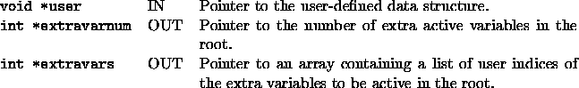

int user_create_root(void *user, int *extravarnum, int **extravars)
The user must specify which extra variables are to be active in the root node in addition to the base variables.

The array of extra indices is sorted if the user has not already done so.